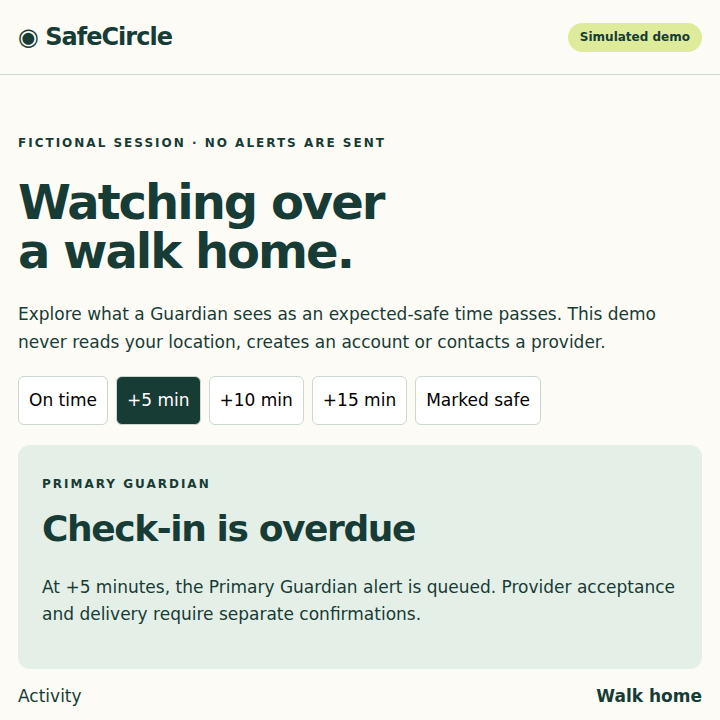

Start a safety session
Choose your activity and expected-safe time. Extend the ETA when plans change.
Set an expected-safe time. Check in along the way. Give trusted Guardians a temporary window into your safety session.
Android development build · Essential safety features stay free

Choose your activity and expected-safe time. Extend the ETA when plans change.
Share signed, expiring links with Primary and Backup Guardians. Location visibility follows your privacy choice.
A late check-in gives at least five minutes of grace. Marking safe ends the session and cancels pending alerts.
Guardian links show limited session details. Precise location is hidden until escalation when authorized; Status Only keeps location hidden throughout.
Safety Capsule fields expire. Notification payloads omit location and capsule content. Guardian phone contacts require explicit consent.
Read the privacy policy →Core sessions, check-ins, Guardian links, privacy settings, escalation and marking safe remain available without a subscription.
SafeCircle+ adds convenience tools and customization. Native paywalls, purchases, restore and Customer Center use RevenueCat’s safecircle_pro entitlement.
Store products, pricing and live purchase verification still require account configuration. This page does not sell a subscription.
Native demo recording is pending. The interactive demo below illustrates the escalation plan using fictional data. It is not evidence of a successful store purchase or notification delivery.
Try the simulated Guardian demosafecircle-debug artifact while signed in to GitHub.app-debug.apk on an Android 8+ test device. This is a development build.No verified public store listing is available. A debug APK is not a store release.
The companion connects to this server for account and session actions. Some device tools are browser simulations. Each such flow should be treated as a demo.
For a real Guardian session, start a session while signed in, create a Primary or Backup link, then open that signed link on another device.
External alerts require configured providers. Queued, provider-accepted and confirmed-delivered are distinct states; sharing a link does not send an SMS.
Open companion →Report reproducible bugs or ask setup questions through GitHub Issues. Do not post phone numbers, location, Guardian links, passwords or billing credentials in a public issue.
SafeCircle is not an emergency dispatch service. If you need immediate help, contact local emergency services directly. Delivery depends on network and provider availability.